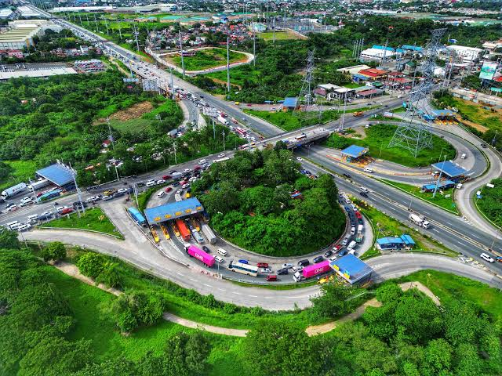

Documents & records
Ask about local documents, certificates, and where to request them.
Explore servicesA helpful place for local residents
Find information about local services, community programs, and everyday concerns.
Contact the inquiry desk
Here for our neighbors
This community inquiry desk is a simple starting point for residents looking for help. Learn about local services or sign in to have a private conversation with another user.
About the community desk